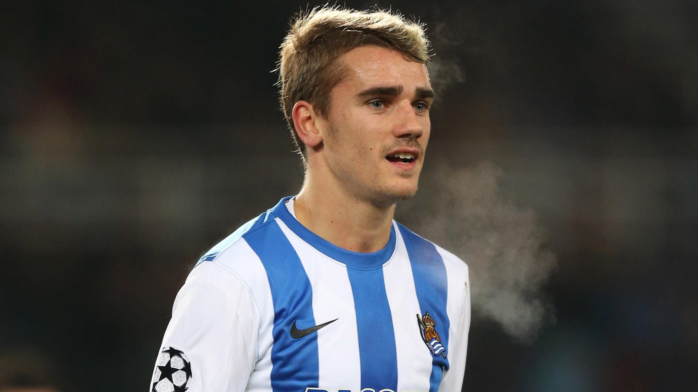

Biography
 Born on March 21, 1991, in the picturesque town of Mâcon, France, Antoine Griezmann grew up with a passion for football inspired by his father’s love of the game. Despite his talent, his small stature made it difficult for him to be scouted by French clubs. However, Spanish club Real Sociedad recognized his potential and brought him to their academy. Griezmann made his professional debut in 2009 and quickly became a star, earning a move to Atlético Madrid in 2014, where he reached new heights. After a stint with FC Barcelona (2019–2021), he returned to Atlético, where he remains a fan favorite. On the international stage, Griezmann has been a cornerstone of the French national team, helping them win the 2018 FIFA World Cup and securing the UEFA Euro 2016 Player of the Tournament award. Off the field, Griezmann is a devoted family man, married to Erika Choperena, with whom he has three children.